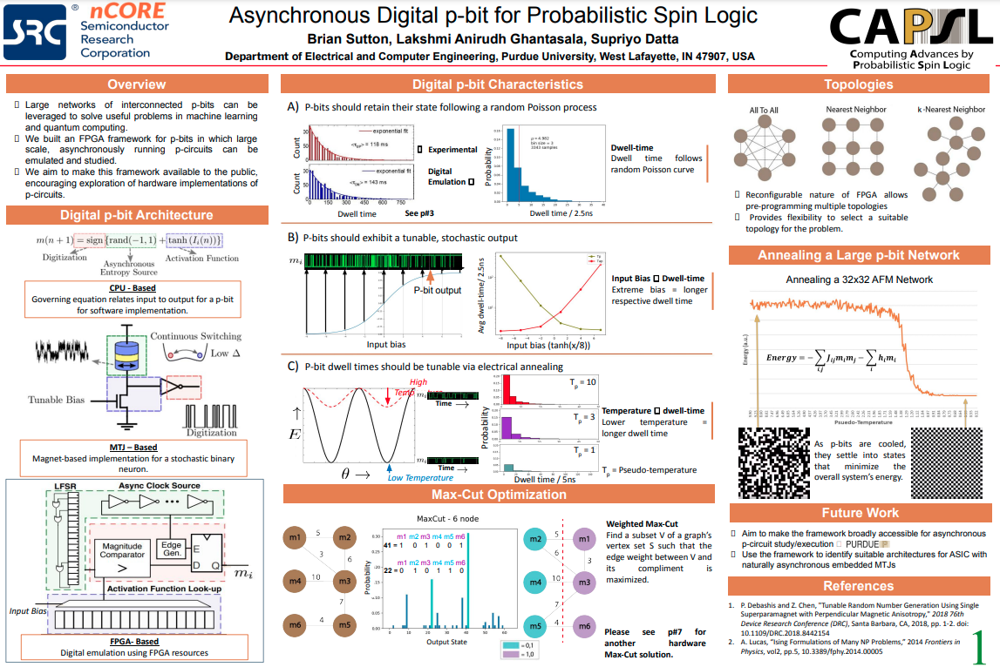
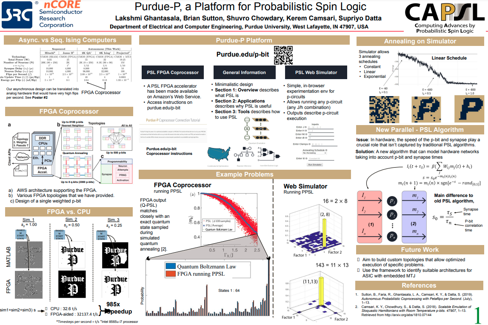

A Novel Probabilistic Approach to Protein Structure Prediction
Designed and accelerated an MCMC algorithm termed Alternating Metropolis-Hastings for optimizing a protein's 3D geometry given its sequence of amino acids.
A Novel Probabilistic Approach to Protein Structure Prediction
Designed and accelerated an MCMC algorithm termed Alternating Metropolis-Hastings for optimizing a protein's 3D geometry given its sequence of amino acids.
FPGA Architectures for Probabilistic Algorithms
Co-built FPGA and microcontroller architectures implementing p-bits to solve np-hard optimization problems including Maxcut and TSP. Built both synchronous (clock based) and asynchronous (no clock) architectures.
Sync Paper Sync Poster Async Paper Async Poster Microcontroller Paper
Edge AI for Automotive Applications
Combined a set of advanced driver facial recognition models into a single, low-powered asic solution for a tech startup.
Wrote a C++ QT application with ML backend that could detect passengers, their age, and presence of mask in a car cabin.
ML for Triaging Skin Cancer Cases
Built a system of CNNs that can quickly triage cases of skin cancer from most to least severe.
{kind=link}
{kind=link}